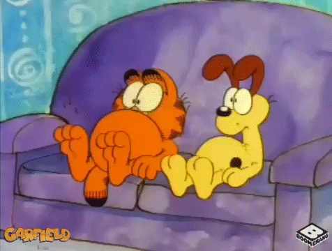

Hořický Food Festival
Nemůžu říct, že bychom věděli, na co přesně se těšíme. O tom, že se v Hořicích, kromě výroby trubiček, pořádají i festivaly jsme se dozvěděli náhodou. Od známých. Internet nám moc nepomohl. Konečně, je to jedna z těch maloměstských událostí, ke kterým dohledáte maximálně tak plakát.

Už název obsahoval důležitý slovo - food. Jídlo! Pořádná žranice! Cesta do mužova srdce vede přes žaludek. Vím, zní to ohraně, ale je to sakramentská pravda. Těšili jsme se, jak si naplníme žaludky. Spokojení a unavení se odvalíme někam do stínu a zbytek dne strávíme upouštěním vzduchu a povolováním knoflíčků. Dají-li síly snad si povyprávíme, jaká to byla dobrota.

Den začal krásně, probuzením po desáté. S vykýblováním z domu a cestou to dávalo přibližně poledne. Akorát na oběd. Vzůru na hmyzáky, sushi a burgery velikosti dobře živeného kojence. Malovali jsme si to pěkně.
V cíli jsme lehce zaváhali a vydali se přesně opačnou cestou. Třikrát hurá místňákům, kteří nás nanavigovali. Dorazili jsme k místnímu pivovaru. Před ním tři maringotky. A dlouhatánské řady. Jen jsme nakoukli, na co že to stojí. Pff, burgery. Možná později. Hlavním tahákem je sushi.
Probojovávali jsme se relativně úzkou uličkou. Společně s tím pomalu opadalo počáteční nadšení. Nejenom, že celý ten “festival” tvoří asi patero stánků. Trochu vyššímu člověku by stačilo se uprostřed na patě otočit a shlédl by všechnu tu slávu.
O poslední kapku naděje, že se pořádně najíme nás připravily ceny. Respektivě poměr porce a její ceny. Když se jde na fesťák, vyšší ceny jsou očekávané. Porce by měly být úměrné. Určitě nejsem sám - rád si zaplatím - pokud za to jídlo stojí.
Jen pro představu. Kolik byste řekli za tuhle porcičku hmyzáků? Chvilka napětí - 110 korun - badum tss. Dobrej co? Úplně vás slyším - jede na fesťák a pak si stěžuje. Vždyť to není tolik. Blá blá. Na ochutnání dejme tomu. Ale najíst se? Těžko.
Bohužel ani sushi, za kterým jsme přišli nás moc nepřesvědčilo. Bylo teplé, malý výběr a ještě relativně drahé - 90 kaček za čtyři rolky. Celá návštěva trvala dohromady asi pět minut. A bylo rozhodnuto, že musíme jinam. S Hradcem za humny bylo rozhodnuto. Running sushi volá!